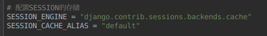
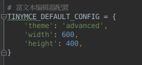
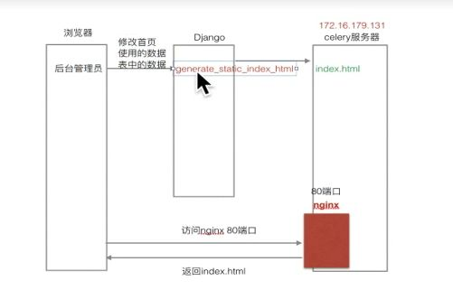
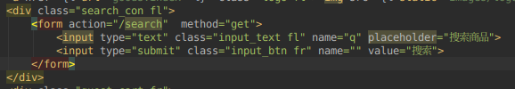

原文连接:https://www.cnblogs.com/xiaodaima/p/11245292.html
1 需求分析
github源码：https://www.github.com/wangyingchuang/dailyfresh
1.1 用户模块
1） 注册页
l 注册时校验用户名是否已被注册。
l 完成用户信息的注册
l 给用户的注册邮箱发送邮件，用户点击邮件中的激活链接完成用户账户的激活。
2）登陆页
l 实现用户的登录功能
3）用户中心
l 用户中心信息页，显示登录用户的信息，包括用户名、电话和地址，同时页面下方显示出用户最近浏览的商品信息。
l 用户中心地址页：显示登陆用户的默认收件地址，页面下方的表单可以新增用户的收货地址。
l 用户中心订单页：显示登录用户的订单信息。
4）其他
l 如果用户已经登陆，页面顶部显示用户的订单信息。
1.2 商品模块
1）首页
l 动态指定首页轮播商品信息。
l 动态指定首页活动信息。
l 动态获取商品的种类信息并显示。
l 动态指定首页显示的每个种类的商品（包括图片商品的文字商品）。
l 点击某一个商品时跳转到商品的详情页面。
2）商品详情页
l 显示出某个商品的详细信息。
l 页面下方显示出该商品的两个新品信息。
3）商品列表页
l 显示出某一个种类的商品的列表数据，分页显示并支持按照默认、价格和人气进行排序。
l 页面下方显示出该商品的两个新品信息。
4）其他
l 通过搜索框搜索商品信息。
1.3 购物车模块
l 列表页和详情页将商品添加到购物车。
l 用户登录后，首页，详情页，列表页显示用户购物车中的商品数目。
l 购物车页面：对用户购物车中的商品操作。如选择某件商品，增加或减少购物车中的商品数目。
1.4 订单相关
l 提交订单页面：显示用户准备购买的商品信息。
l 点击提交订单完成订单的创建。
l 用户中心订单页显示用户的订单信息。
l 点击支付完成订单的支付。
l 点击评价完成订单的评价。
2 项目架构概览
2.1 页面图
2.2 功能图
2.3 部署图
3 数据库设计
3.1 实体类图
4 开发环境和工具
ubuntu18.4
python>3.6
Django == 2.2
pychram
redis
mysql 5.7
celery
fastDFS
nginx
Django-haystack
whoosh
jieba
alipay
requests
5 配置项目环境
5.1 配置mysql数据库环境
5.2 配置缓存路径--redis数据库环境
缓存存到redis数据库里
5.3 配置session存储方式
存到缓存

5.4 发送邮件配置
5.5 配置fastDFS 和 nginx
参考https://blog.csdn.net/weixin_42149982/article/details/82391218
l 与python进行交互
Dailyfresh/settings.py
Utils/fast/storage.py

5.6 配置celery
Celery_tasks/tasks.py
Celery 官网：http://www.celeryproject.org
Celery 官方文档英文版：http://docs.celeryproject.org/en/latest/index.html
Celery 官方文档中文版：http://docs.jinkan.org/docs/celery
celery配置：http://docs.jinkan.org/docs/celery/configuration.html#configuration
启动celery
Celery -A celery_task.tasks worker -l info
5.7 配置Django-haystack + whoosh + jieba
详细步骤：https://blog.csdn.net/abc_soul/article/details/88641269
Pip3 install Django-haystack
Pip3 install whoosh
Pip3 install jieba
首先是把 django haystack 加入到 INSTALLED_APPS 选项里,再添加配置， django haystack 规定。要相对某个 app 下的数据进行全文检索，就要在该 app 下创建一个 search_indexes.py 文件，然后创建一个 XXIndex 类（XX 为含有被检索数据的模型，如这里的 Test），并且继承 SearchIndex 和 Indexable。我们使用数据模板去建立搜索引擎索引的文件，接下来就是配置 URL，修改一下搜索表单，让它提交数据到 django haystack 搜索视图对应的 URL，使用 Whoosh 作为搜索引擎， haystack_search 视图函数会将搜索结果传递给模板 search/search.html，因此创建这个模板文件，对搜索结果进行简单渲染，但在 django haystack 中为 Whoosh 指定的分词器是英文分词器，可能会使得搜索结果不理想，我们把这个分词器替换成 jieba 中文分词器，最后一步就是建立索引文件了，运行命令 python manage.py rebuild_index 就可以建立索引文件了。
5.8 其他配置
l 配置templates路径
l 配置static路径
l 配置django认证系统使用的模型类

l 配置 富文本编辑器
注册应用 ‘tinymce’

l 配置LOGIN_URL
LOFGIN_URL = '/user/login'
l 配置alipay
Pip3 insatll alipay-sdk-python
使用openssl生成本机的公钥和私钥。
创建应用
alipay_client_config
= AlipayClientConfig()
alipay_client_config.server_url = 'https://openapi.alipaydev.com/gateway.do'
alipay_client_config.app_id = '2016100100641374'
app_private_key = ''
with open(os.path.join(settings.BASE_DIR, 'apps/order/app_private_key.pem'), 'r') as f:
for line
in f:
app_private_key += line
alipay_client_config.app_private_key = app_private_key
alipay_public_key = ''
with open(os.path.join(settings.BASE_DIR, 'apps/order/alipay_public_key.pem'), 'r') as f:
for line
in f:
alipay_public_key += line
alipay_client_config.alipay_public_key = alipay_public_key
"""
得到客户端对象。
注意，一个alipay_client_config对象对应一个DefaultAlipayClient，定义DefaultAlipayClient对象后，alipay_client_config不得修改，如果想使用不同的配置，请定义不同的DefaultAlipayClient。
logger参数用于打印日志，不传则不打印，建议传递。
"""
client = DefaultAlipayClient(alipay_client_config=alipay_client_config, logger=logger)
total_pay = order.transit_price + order.total_price
total_pay = round(float(total_pay), 2)
model = AlipayTradePagePayModel()
model.out_trade_no = order_id
model.total_amount = total_pay
model.subject = "天天生鲜{0}".format(order_id)
model.product_code = "FAST_INSTANT_TRADE_PAY"
调用网页支付接口
request =
AlipayTradePagePayRequest(biz_model=model)
response = client.page_execute(request, http_method="GET")
# 访问支付页面
return JsonResponse({'res': 3, 'response': response})
调用查询交易接口
# request =
AlipayTradeQueryRequest(biz_model=model)
# response = client.page_execute(request, http_method="GET")
# data = requests.get(response)
# print(json.loads(data.text))
# data = json.loads(data.text)
# print(data.get('alipay_trade_query_response').get('code'))
6 建立数据模型
l 建立模型类
（依据上面实体类图创建的，列属性参照上面即可，具体请看源码）
user/models.py
Address
User继承djaong用户管理模型 ，配置django认证系统使用的模型类
AUTH_USER_MODEL = 'user.User'
Goods/models.py
GoodsType
GoodsSKU
GoodsSPU
GoodsImage
IndexGoodsTypeBanner
IndexGoodsBanner
IndexPromotionBanner
Ordre/models.py
OrderInfo
OrderGoods
7 详细过程
7.1 用户模块设计——user
l 注册过程
浏览器访问注册页面get方式，views.register进行处理（改为views.RegisterView.post），返回注册页面。用户输入信息进行注册，浏览器提交post请求，views.register进行处理（改为views.RegisterView.post），校验用户输入信息是否合法，将用户添加到数据库中，生成用户token，给用户发送专属激活链接，用户点击链接激活，用户账户生效。
生成token使用itsdangerous 模块中的Timed。。。Serializer加密类，发送邮件使用Django中sender_mail()方法,由于发送邮件过程可能耗时，使用了celery模块，因此注册之后页面直接跳转到首页。
l 登陆过程
Get方式：显示登陆页面，判断request.COOKIES是否存在用户名，存在就自动填充到输入框。
Post方式：用户填完登陆信息提交Post表单，此时验证填入信息是否有误，如果有误给出相应提示，用户账户密码校验使用了django的authenticate()方法，正确返回一个user对象，并使用login(request, user)记录用户的登陆session信息，否则返回None。
有些网页需要用户登陆才能访问，就需要使用login_required()装饰器装饰那些也面的View.as_view()方法，此方法如果校验失败会自动转到一个url地址，我在settings.py 配置LOGIN_URL修改它默认的跳转地址为’/user/login’返回登陆页面，而且访问url地址后面自动添加一个get值（’next’），记录从哪个网页跳转过来的，在正确登陆之后可以跳转到上一个地址。 由于这样会使urls.py看起来繁杂，创建一个utils/mixin.py

让需要此功能的View类继承此类即可，一定要在models.View类之前。
l 退出登录
Get请求：使用logout（）清除用户的session信息，返回首页。
l 用户中心——地址页
Get请求：获取用户的默认地址，返回地址页。获取用户的默认地址多次用到，address=Address.objects.get(user=user, is_default=True), 将此方法封装，建立一个新的地址管理类继承model.Manage，写一个获取默认地址的方法，再让Address类的objects=这个类的对象。
Post请求：用户添加地址，判断输入信息是否合法，如果用户没有默认地址，则将此地址设为默认地址，跳转回此页面。
l 用户中心——信息页
Get请求：获取用户的默认地址，获取用户的最近5条浏览的商品图片，获取默认地址功能已经实现，获取用户最近浏览记录需要使用redis存储的缓存，用户在商品页面浏览时添加商品id到redis，在此页面从redis中读取商品id再使用模型类查询商品图片。然后经过模板渲染返回给浏览器。
具体思路以及图片的上传和下载如下：

l 用户中心——订单页
(在订单模块进行开发)
7.2 商品模块设计——goods
l 商品首页 /index
Get请求：
判断用户是否登陆，若登陆了获取用户信息，获取购物车中数目信息。获取商品类型信息，获取首页商品轮播信息，获取首页商品类型轮播信息，获取首页活动轮播信息，通过模板进行渲染，返回给用户。为提高网站性能和安全性
- 使用页面静态化方法
在管理员对首页信息添加或修改之后，利用celery异步生成一个静态页面，只要页面没有数据更新，用户直接返回这个静态页面，减少查询数据库的次数。使用nginx来调度访问Django网站还是访问nginx。

- 使用页面数据缓存方法
在页面信息被修改时清除缓存数据，使用redis存储缓存数据，用户访问网站时，如果从缓存中没有找到数据，则从数据库中获取并存入缓存，否则直接使用缓存。同样减少了查询数据库的次数。
l 商品详情页 /goods/detail/(good_id)
Get请求：
判断用户是否登陆，若登陆了获取用户信息，获取购物车中数目信息。获取商品SKU信息，获取SKU商品的同类型SPU的所有SKU商品信息，获取商品类型信息，获取同类型商品新品信息，获取订单商品信息。通过模板进行渲染，返回给用户。
l 商品列表页 /goods/list/(type_id)/(page)?sort=sort_method
Get请求：
判断用户是否登陆，若登陆了获取用户信息，获取购物车中数目信息。获取商品类型，获取商品类型信息,获取同类型商品信息，将同类型商品信息分页（需要用到Paginator类，参见https://www.jianshu.com/p/332406309476），获取当前页面上商品。通过模板进行渲染，返回给用户。
l 搜索功能的实现
商品模块每个页面都有一个搜索框，实现搜索功能：首先是把 django haystack 加入到 INSTALLED_APPS 选项里,再添加配置，

django haystack 规定。要相对某个 app 下的数据进行全文检索，就要在该 app 下创建一个 search_indexes.py 文件，然后创建一个 XXIndex 类（XX 为含有被检索数据的模型，如这里的 Goods SKU），并且继承 SearchIndex 和 Indexable。
我们使用数据模板去建立搜索引擎索引的文件，接下来就是配置 URL，修改一下搜索表单，让它提交数据到 django haystack 搜索视图对应的 URL，使用 Whoosh 作为搜索引擎， haystack_search 视图函数会将搜索结果传递给模板 search/search.html，因此创建这个模板文件，对搜索结果进行简单渲染，

但在 django haystack 中为 Whoosh 指定的分词器是英文分词器，可能会使得搜索结果不理想，把这个分词器替换成 jieba 中文分词器，
最后一步就是建立索引文件了，运行命令 python3 manage.py rebuild_index 就可以建立索引文件了。
7.3 购物车模块设计——cart
l 加入购物车功能 /cart/add
Post请求： 从商品详情页发来ajax post型请求，
# 请求方式：ajax post
# 传递参数：商品id
sku_id ,商品数量 count
# 返回： 成功：JsonResponse({'res':5, 'message': '添加成功', 'total_count': total_count})
根据数据进行处理：往购物车里添加商品，购物车用redis存储，
返回数据之后原页面对应显示信息。
l 显示我的购物车页面 /cart
Get请求：用户未登录不可访问， 获取用户信息，从redis中获取用户的购物车中商品列表，给商品动态添加小计和数目属性，组织参数返回给模板，模板渲染遍历显示，返回给用户。
l 更新购物车功能 /cart/update
Post请求： 从我的购物车页面发来ajax post型请求，
# 请求方式：ajax post
# 传递参数：商品id
sku_id ,商品数量 count
# 返回： 成功：JsonResponse({'res':5, 'message': '更新成功', 'total_count': total_count})
根据数据进行处理：更新购物车里商品，购物车用redis存储，
返回数据之后原页面对应显示信息。
l 删除购物车中商品功能 /cart/delete/
Post请求： 从商品详情页发来ajax post型请求，
# 请求方式：ajax post
# 传递参数：商品id
sku_id ,商品数量 count
# 返回： 成功：JsonResponse({'res':3, 'message': '删除成功', 'total_count': total_count})
根据数据进行处理：往购物车里添加商品，购物车用redis存储，
返回数据之后原页面对应显示信息。
l 前端说明
主要使用js，jquery 进行页面更新。主要实现以下功能：
Detail.html
1 计算和设置商品总价格（在购物车页面是小计）
2 增加商品数量
3 减少商品数量
4 手动输入商品数量
5 添加到购物车 发起ajax请求 # 请求方式：ajax post # 传递参数：商品id sku_id ,商品数量 count， 实现购物车数量改变。
Cart.html
1 计算被选中的商品的数量和总价格
2 计算商品小计
3 更新购物车中的商品数量 发起ajax请求 # 请求方式：ajax post # 传递参数：商品id sku_id ,商品数量 count， 实现购物车中商品数量改变，成功与否返回相应信息。
4 商品的全选和全不选功能
5 单个商品的checkbox改变时，设置全选与否
6 购物车商品数量的增加 若3成功，更新页面
7 购物车商品数量的减少 若3成功，更新页面
8 手动输入购物车商品数量 若3成功，更新页面
9 删除购物车中的记录 发起ajax请求 # 请求方式：ajax post # 传递参数：商品id sku_id， 实现购物车中商品数量改变，成功与否返回相应信息并相应改变页面。
7.4 订单模块设计——order
l 提交订单页面：显示用户准备购买的商品信息。
Post请求：从购物车页面点击去结算，发起post请求，提交的参数有：选中的商品的列表。查询redis中商品的数量，再计算出商品的小计，计算出总数量和总价格，再查出来地址信息，一并显示给用户。
l 点击提交订单完成订单的创建。
Post请求：用户点击提交订单发起ajax post请求，提交参数有：地址id、支付方式、商品列表字符串。生成订单信息表，查询每种商品的库存和购买数量，判断是否购买成功，成功则向订单商品表中添加数据，失败则返回错误信息，并回滚数据库事务，此时需要用到mysql的事物以及加锁和隔离内容，加锁方式有两种，悲观锁和乐观锁，我提供了两种，最终跳转到相应页面。
l 用户中心订单页显示用户的订单信息。
Get请求;查询订单信息，分页显示。
l 点击支付完成订单的支付
Post请求：用户发起ajax post请求，提交订单参数，网站生成对应支付方式的支付页面地址。如果请求成功，get请求支付页面，前往支付。另一方面，网站监听支付结果(因现在没有公网ip)，如果支付成功则提示支付成功，跳转到订单页面。
我只实现了支付宝支付方式：使用pip3 install alipay-sdk-python
l 点击评价完成订单的评价 /order/comment/(order_id)
Get请求：查询订单信息，返回提交评论的页面。
Post请求：提交评论，跳转到订单页。